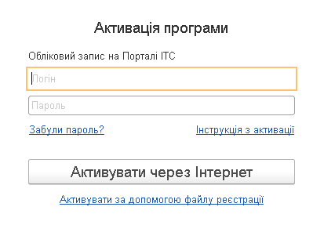

Автоматическая активация (при наличии доступа к Интернету)
Активация с помощью файла регистрации
Если ваш компьютер подключен к Интернету и у вас есть учетная запись на Портале ИТС, то такой способ предпочтителен.
В диалоге «Активация программы» укажите логин и пароль к вашей учетной записи на Портале ИТС (https://portal.bas-soft.eu/) и нажмите «Активировать через Интернет».

Программа подключится к порталу и получит список поставок программы, которые зарегистрированы в личном кабинете ИТС. Если зарегистрирована только одна поставка, то для нее сразу будет показано окно активации.
Если данные регистрации верны, нажмите «Начать работу». Информационная база будет активирована для ведения учета выбранной организацией или предпринимателем.
Если на предыдущем шаге указана неверная учетная запись, по гиперссылке «Выбрать другую учетную запись» можно вернуться к диалогу ввода логина или пароля.
Если для учетной записи зарегистрированы несколько поставок, то будет показан диалог выбора одной из них для активации.
Нужно выбрать одну из указанных поставок и нажать кнопку «Выбрать». После этого нужно проверить данные регистрации и можно начинать работу.

Если доступа к Интернету нет, то можно активировать программу с помощью файла активации. Файл активации можно скачать из раздела «Программные продукты» Портала ИТС.
Для выполнения активации нужно нажать кнопку «Выбрать файл регистрации» и указать файл, который вы скачали с Портала ИТС. Файл регистрации представляет собой zip-архив с регистрационными данными. После выбора файла регистрации будет показаны регистрационные сведения, которые содержатся в файле.

Если регистрационные данные верны, нажмите кнопку «Начать работу». После этого программа будет активирована для ведения учета выбранной организацией или предпринимателем.
Если выбран файл с данными регистрации другой организации, то можно нажать гиперссылку «Выбрать другой файл регистрации» и вернуться к диалогу выбора файла.